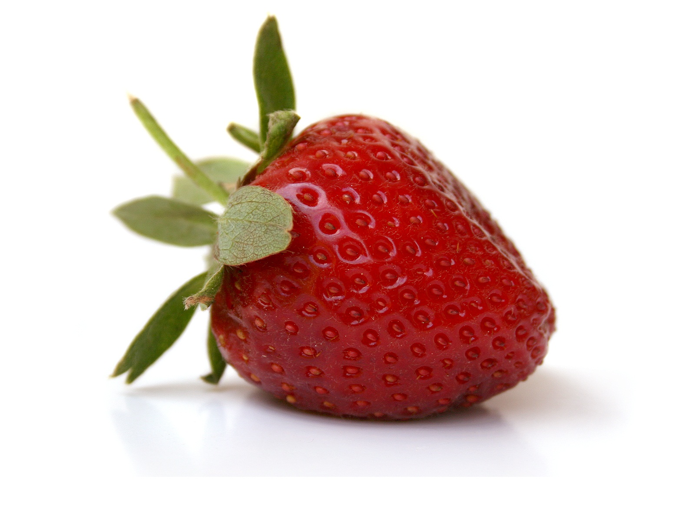
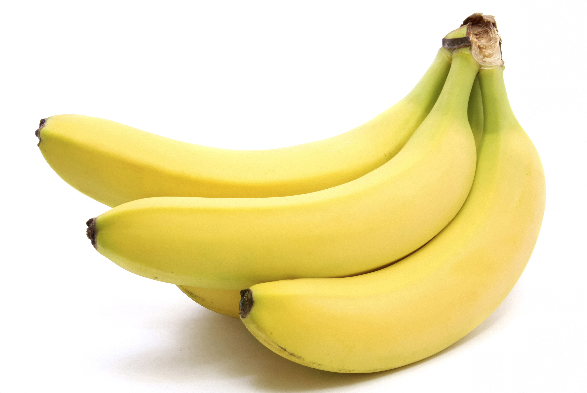
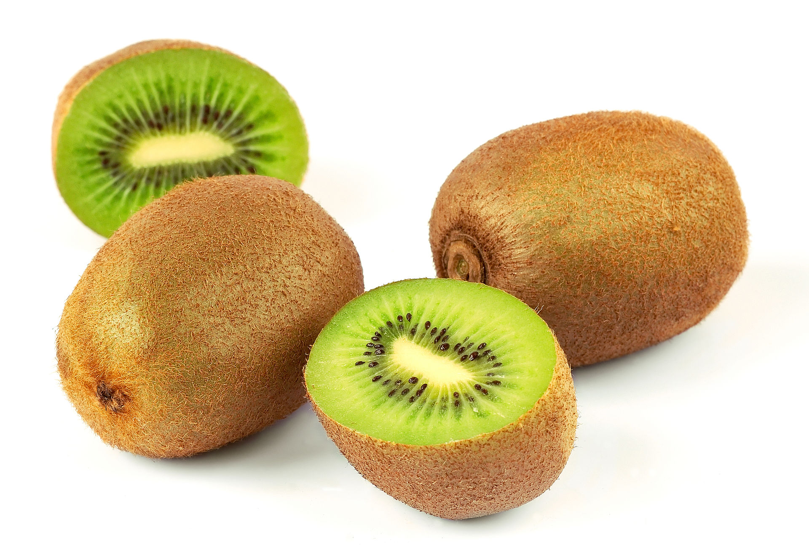
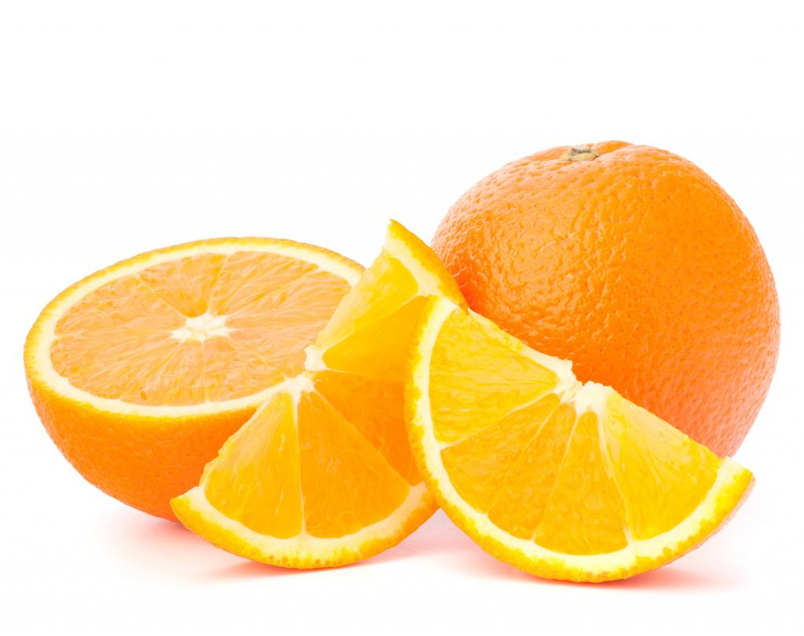

Dans le langage courant et en cuisine, un fruit est un aliment végétal, à la saveur sucrée, généralement consommé cru.
Étymologie
Le terme « fruit » provient du latin fructus qui a, dès l'époque latine, les différents sens que l'on lui connaît aujourd’hui. C'était le
participe passé de fruor.
Fraise

La fraise est un nom vernaculaire désignant en français les fruits de plusieurs espèces de fraisier, plantes herbacées du genre
Fragariade la famille des Rosaceae. Ces fruits sont botaniquement parlant des faux-fruits. En Europe et en Amérique du Nord, les fruits
de l'espèce Fragaria vesca, le fraisier des bois, sont de petite taille. Connus depuis l'Antiquité, les Romains les consommaient et les
utilisaient dans leurs produits cosmétiques en raison de leur odeur agréable. Elle est cultivée dans les jardins européens vers le XIVe
siècle. Le fraisier musqué est connu pour ses fruits petits d'une saveur musquée unique que les connaisseurs donnent comme
supérieur à la fraise des jardins. Il est cultivé depuis le XVIè siècle. Le premier cultivar connu du genre Fragaria appartient à cette
espèce avec 'Le chapiron' nommé en 1576. Le fraisier vert a été très peu cultivé car ses fruits sont moins intéressants par leur acidité
plus forte que les espèces ci-dessus. Cependant il a fait l'objet de cueillettes pour la consommation personnelle.
Banane

La banane est le fruit, ou baie dérivant de l'inflorescence du bananier. Les bananes sont les fruits climactériques très généralement
stériles issus de variétés domestiquées. Les fruits des bananiers sauvages possèdent des graines et sont généralement jaunes
lorsqu'ils sont mûrs. Les bananes constituent un élément essentiel du régime alimentaire de certains pays et constituent une nourriture
de base pour des millions de personnes sous les tropiques.
Kiwi

Les kiwis sont des fruits de plusieurs espèces de lianes du genre Actinidia, famille des Actinidiaceae. Ils sont originaires de Chine,
notamment de la province de Shaanxi. On en trouve par ailleurs dans des climats dits montagnards tropicaux. En France, les kiwis de
l'Adour disposent d'une IGP et d'un label rouge.
Sa pulpe généralement verte, sucrée et acidulée, entourée d'une peau brune et duveteuse (poilue), contient une centaine de
minuscules graines noires comestibles. Le kiwi est une source de vitamine C, mais aussi de vitamine A et E, de calcium, de fer et
d'acide folique.
Il existe différentes espèces, comme Actinidia chinensis, Actinidia deliciosa, le kiwai (Actinidia arguta), le kiwi arctique, etc.
Orange

L'orange' est un agrume, fruit des orangers, des arbres de différentes espèces de la famille des Rutacées ou d'hybrides de ceux-ci. Il
en existe donc plusieurs types, principalement issus de l'espèce Citrus sinensis comme les oranges sanguines, et les oranges amères
produites par le bigaradier.
Comestible, elle est très riche en vitamine C. C’est le quatrième fruit le plus cultivé au monde.